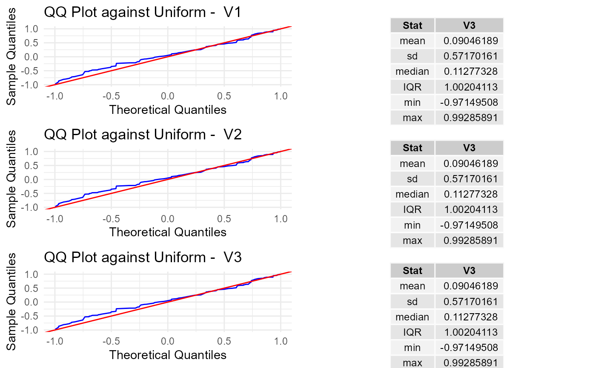
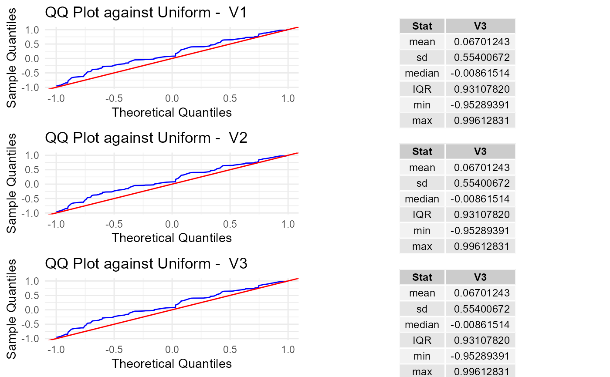

summary method for the class pk.test
Usage
# S4 method for pk.test
summary(object)Value
List with the following components:
summary_tablesTable of computed descriptive statistics per variable.test_resultsData frame with the results of the performed Poisson kernel-based test.qqplotsFigure with qq-plots for each variable against the uniform distribution.
Examples
# create a pk.test object
x_sp <- sample_hypersphere(3, n_points=100)
unif_test <- pk.test(x_sp,rho=0.8)
summary(unif_test)
#>
#> Poisson Kernel-based quadratic distance test of
#> Uniformity on the Sphere
#> Test_Statistics Critical_Value Reject_H0
#> 1 0.3695373 0.07692385 TRUE
#> 2 45.7751472 52.23076627 FALSE

#> $summary_tables
#> V1 V2 V3
#> mean -0.1190834 -0.07148768 -0.04525735
#> sd 0.6131653 0.55360736 0.55325677
#> median -0.2847590 -0.15350498 -0.02571661
#> IQR 1.0847756 0.92138035 0.91772848
#> min -0.9829758 -0.98285088 -0.99775032
#> max 0.9623950 0.97265273 0.97763090
#>
#> $test_results
#> Test_Statistics Critical_Value Reject_H0
#> 1 0.3695373 0.07692385 TRUE
#> 2 45.7751472 52.23076627 FALSE
#>
#> $qqplots

#>